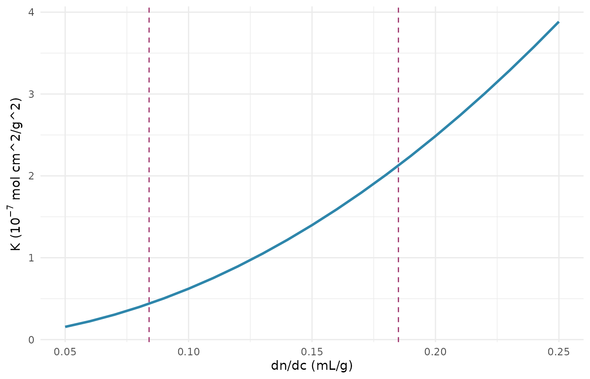
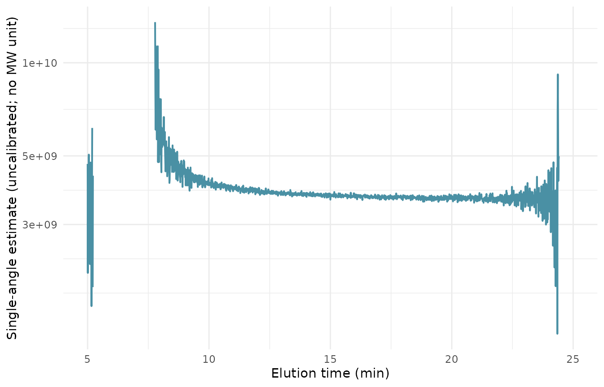

Multi-Angle Light Scattering (MALS) for Absolute Molecular Weight
Source:vignettes/mals-detection.Rmd
mals-detection.RmdOverview
Light scattering combined with concentration can estimate molecular weight without polymer calibration standards. Absolute values still require an instrument calibration constant and appropriate optical inputs.
step_sec_mals() currently uses one scattering angle and
assumes the particle form factor is approximately one. It does not fit a
multi-angle model or calculate Rg. Without a scattering calibration
constant, its output is relative and uncalibrated.
This guide describes the inputs and limits of the current step.
Setup
library(measure)
#> Loading required package: recipes
#> Loading required package: dplyr
#>
#> Attaching package: 'dplyr'
#> The following objects are masked from 'package:stats':
#>
#> filter, lag
#> The following objects are masked from 'package:base':
#>
#> intersect, setdiff, setequal, union
#>
#> Attaching package: 'recipes'
#> The following object is masked from 'package:stats':
#>
#> step
library(measure.sec)
library(recipes)
library(dplyr)
library(ggplot2)How MALS works
Light-scattering principle
Molecules in solution scatter incident light. The measured response depends on:
- Molecular weight: Larger molecules scatter more light
- Concentration: More molecules = more scattering
- Scattering angle: Angular dependence reveals molecular size
The fundamental relationship is the Rayleigh-Debye equation:
Where:
| Symbol | Meaning |
|---|---|
| K | Optical constant (depends on dn/dc, wavelength, solvent) |
| c | Concentration (g/mL) |
| R(θ) | Excess Rayleigh ratio (scattered intensity) |
| Mw | Weight-average molecular weight |
| P(θ) | Particle scattering function (angular dependence) |
| A₂ | Second virial coefficient |
Optical constant K
The optical constant depends on your experimental setup:
Where:
- n₀: Solvent refractive index
- dn/dc: Refractive index increment of the polymer
- λ: Laser wavelength
- Nₐ: Avogadro’s number

Optical constant K calculated from the displayed equation at a fixed wavelength of 658 nm and solvent refractive index of 1.333, across the shown dn/dc values. This is a calculation, not an instrument measurement.
With wavelength and solvent refractive index fixed, the equation
makes K proportional to the square of dn_dc.
Light scattering and calibration
Conventional SEC calibration maps elution to the molecular-weight scale of its standards. Light scattering instead combines detector response with concentration and optical constants. Absolute estimates require a detector calibration constant as well as the concentration and optical inputs.
step_sec_mals() implements a single-angle approximation.
It does not provide a multi-angle fit or an Rg estimate. For the current
workflow, use the result as relative and uncalibrated unless an
appropriate detector calibration constant is supplied.
Multi-angle analysis and Rg
Multi-angle methods use the change in scattering across angles to
estimate molecular size. The current step_sec_mals() step
accepts one angle and does not calculate Rg. Its formalism
argument is reserved for future angular fitting; only the default value
is currently accepted.
Example dataset
data(sec_triple_detect, package = "measure.sec")
# Select samples with MALS data
mals_samples <- sec_triple_detect |>
filter(sample_type == "sample")
glimpse(mals_samples)
#> Rows: 14,007
#> Columns: 11
#> $ sample_id <chr> "PMMA-Low", "PMMA-Low", "PMMA-Low", "PMMA-Low", "PMMA…
#> $ sample_type <chr> "sample", "sample", "sample", "sample", "sample", "sa…
#> $ polymer_type <chr> "pmma", "pmma", "pmma", "pmma", "pmma", "pmma", "pmma…
#> $ elution_time <dbl> 5.00, 5.01, 5.02, 5.03, 5.04, 5.05, 5.06, 5.07, 5.08,…
#> $ ri_signal <dbl> 2.177879e-04, 0.000000e+00, 2.307149e-04, 1.490633e-0…
#> $ uv_signal <dbl> 0.000000e+00, 0.000000e+00, 0.000000e+00, 6.442527e-0…
#> $ mals_signal <dbl> 3.454417e-06, 1.210776e-05, 1.804800e-05, 2.001408e-0…
#> $ known_mw <dbl> 25000, 25000, 25000, 25000, 25000, 25000, 25000, 2500…
#> $ known_dispersity <dbl> 1.8, 1.8, 1.8, 1.8, 1.8, 1.8, 1.8, 1.8, 1.8, 1.8, 1.8…
#> $ dn_dc <dbl> 0.084, 0.084, 0.084, 0.084, 0.084, 0.084, 0.084, 0.08…
#> $ extinction_coef <dbl> 0.1, 0.1, 0.1, 0.1, 0.1, 0.1, 0.1, 0.1, 0.1, 0.1, 0.1…MALS workflow with measure.sec
Basic MALS analysis
# Illustrative single-angle workflow; without a scattering calibration constant, output is relative
rec_mals <- recipe(
ri_signal + mals_signal + elution_time + dn_dc ~ sample_id,
data = mals_samples
) |>
update_role(sample_id, new_role = "id") |>
# Convert signals to measure format
step_measure_input_long(ri_signal, location = vars(elution_time), col_name = "ri") |>
step_measure_input_long(mals_signal, location = vars(elution_time), col_name = "mals") |>
# Baseline correction
step_sec_baseline(measures = c("ri", "mals")) |>
# Process RI for concentration
step_sec_ri(measures = "ri", dn_dc_column = "dn_dc") |>
# Convert RI to concentration
step_sec_concentration(
measures = "ri",
detector = "ri",
injection_volume = 100, # µL
sample_concentration = 2.0 # mg/mL
) |>
# Single-angle scattering estimate (relative without a calibration constant)
step_sec_mals(
mals_col = "mals",
dn_dc_column = "dn_dc",
wavelength = 658, # nm (common MALS laser)
solvent_ri = 1.407, # THF
angles = 90 # Single angle for this example
)
#> Warning: No scattering calibration constant supplied; output is relative and
#> uncalibrated.
prepped_mals <- prep(rec_mals)
#> Warning: Negative detector values were excluded during mass normalization.
#> ℹ 2222 of 14007 signal points (15.9%) were set to zero.
#> ℹ Column "ri": maximum negative share of absolute sampled signal area was 2% in
#> row 4.
result_mals <- bake(prepped_mals, new_data = NULL)
# View results
result_mals |>
select(sample_id, ri, mals, mw_mals) |>
head(3)
#> # A tibble: 3 × 4
#> sample_id ri mals mw_mals
#> <chr> <meas> <meas> <meas>
#> 1 PMMA-Low [2,001 × 2] [2,001 × 2] [2,001 × 2]
#> 2 PMMA-Med [2,001 × 2] [2,001 × 2] [2,001 × 2]
#> 3 PMMA-High [2,001 × 2] [2,001 × 2] [2,001 × 2]The example dataset is synthetic. The recipe omits a scattering
calibration constant, so mw_mals is relative and
uncalibrated.
mals_index <- match("PMMA-Med", result_mals$sample_id)
mals_curve <- result_mals$mw_mals[[mals_index]]
mals_plot <- tibble(
elution_time = mals_curve$location,
estimate = mals_curve$value
)
ggplot(mals_plot, aes(elution_time, estimate)) +
geom_line(linewidth = 0.7, colour = "#4A90A4", na.rm = TRUE) +
scale_y_log10() +
labs(
x = "Elution time (min)",
y = "Single-angle estimate (uncalibrated; no MW unit)"
) +
theme_minimal(base_size = 11)
Relative, uncalibrated step_sec_mals() output for PMMA-Med
from the synthetic sec_triple_detect example data. The
output has no molecular-weight unit; gaps are missing estimates and
remain unconnected.
Key parameters
| Parameter | Description | Value |
|---|---|---|
dn_dc |
Refractive index increment for the sample and solvent | Set from the validated method |
wavelength |
Laser wavelength in nm | Set from the instrument |
solvent_ri |
Solvent refractive index | Set for the solvent and measurement conditions |
angles |
One detection angle in degrees | Supply the angle used by the detector |
formalism |
Reserved for future angular fits | Default only; no angular fit is performed |
Refractive index increment
The refractive index increment (dn_dc) is the change in
refractive index per unit concentration. Because the optical constant
depends on its square, use a value established for the sample, solvent,
temperature, and wavelength.
Multi-angle detection
Multi-angle fitting and Rg calculation are not implemented. The following example is not executable with the current step because it supplies several angles:
step_sec_mals(
mals_col = "mals",
dn_dc = 0.185,
wavelength = 658,
solvent_ri = 1.407,
angles = c(35, 50, 75, 90, 105, 120, 145),
formalism = "zimm"
)Conformation analysis
Relating Rg to molecular weight can help characterize polymer conformation, but the current step does not calculate Rg. Use another validated source for that measurement.
Troubleshooting
Common MALS issues
| Problem | Possible Causes | Solutions |
|---|---|---|
| Noisy or missing estimates | Low signal or concentration | Check response, baseline, and alignment |
| Unstable estimates | Aggregates or dust | Inspect sample preparation and detector response |
| Unexpected scale | dn/dc or instrument calibration mismatch | Verify inputs against the measurement method |
When to use MALS
Light scattering can help when the sample differs from available
polymer standards or when a standard-relative result is not sufficient.
The current step_sec_mals() output is absolute only when
the concentration units and instrument calibration constant are
appropriate for the detector.
See also
- Getting Started - Basic SEC workflow
- LALS and RALS Detection - Simpler light scattering alternatives
- Multi-Detector SEC - RI + Viscometer + LS workflows
- System Suitability - QC metrics for MALS
Session info
sessionInfo()
#> R version 4.6.2 (2026-10-29)
#> Platform: x86_64-pc-linux-gnu
#> Running under: Ubuntu 26.04.1 LTS
#>
#> Matrix products: default
#> BLAS: /usr/lib/x86_64-linux-gnu/openblas-pthread/libblas.so.3
#> LAPACK: /usr/lib/x86_64-linux-gnu/openblas-pthread/libopenblasp-r0.3.32.so; LAPACK version 3.12.0
#>
#> locale:
#> [1] LC_CTYPE=C.UTF-8 LC_NUMERIC=C LC_TIME=C.UTF-8
#> [4] LC_COLLATE=C.UTF-8 LC_MONETARY=C.UTF-8 LC_MESSAGES=C.UTF-8
#> [7] LC_PAPER=C.UTF-8 LC_NAME=C LC_ADDRESS=C
#> [10] LC_TELEPHONE=C LC_MEASUREMENT=C.UTF-8 LC_IDENTIFICATION=C
#>
#> time zone: UTC
#> tzcode source: system (glibc)
#>
#> attached base packages:
#> [1] stats graphics grDevices utils datasets methods base
#>
#> other attached packages:
#> [1] ggplot2_4.0.4 measure.sec_0.0.0.9000 measure_0.0.1.9004
#> [4] recipes_1.4.0 dplyr_1.2.1
#>
#> loaded via a namespace (and not attached):
#> [1] gtable_0.3.6 xfun_0.62 bslib_0.12.0
#> [4] lattice_0.23-1 vctrs_0.7.3 tools_4.6.2
#> [7] generics_0.1.4 parallel_4.6.2 tibble_3.3.1
#> [10] pkgconfig_2.0.3 Matrix_1.7-6 data.table_1.18.6.1
#> [13] RColorBrewer_1.1-3 S7_0.2.2 desc_1.4.3
#> [16] lifecycle_1.0.5 compiler_4.6.2 farver_2.1.2
#> [19] textshaping_1.0.5 codetools_0.2-20 htmltools_0.5.9
#> [22] class_7.3-24 sass_0.4.10 yaml_2.3.12
#> [25] prodlim_2026.03.11 tidyr_1.3.2 pillar_1.11.1
#> [28] pkgdown_2.2.1 jquerylib_0.1.4 MASS_7.3-66
#> [31] cachem_1.1.0 gower_1.0.2 rpart_4.1.27
#> [34] parallelly_1.50.0 lava_1.11 tidyselect_1.2.1
#> [37] digest_0.6.39 future_1.82.0 purrr_1.2.2
#> [40] listenv_1.1.0 labeling_0.4.3 splines_4.6.2
#> [43] fastmap_1.2.0 grid_4.6.2 cli_3.6.6
#> [46] magrittr_2.0.5 utf8_1.2.6 survival_3.8-12
#> [49] future.apply_1.21.0 withr_3.0.3 scales_1.4.0
#> [52] lubridate_1.9.5 timechange_0.4.0 rmarkdown_2.32
#> [55] globals_0.20.0 otel_0.3.0 nnet_7.3-21
#> [58] timeDate_4052.112 ragg_1.5.2 evaluate_1.0.5
#> [61] knitr_1.52 hardhat_1.4.3 rlang_1.3.0
#> [64] Rcpp_1.1.2 glue_1.8.1 ipred_0.9-16
#> [67] jsonlite_2.0.0 R6_2.6.1 systemfonts_1.3.3
#> [70] fs_2.1.0